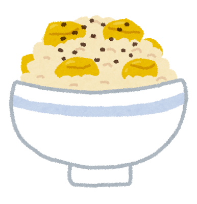
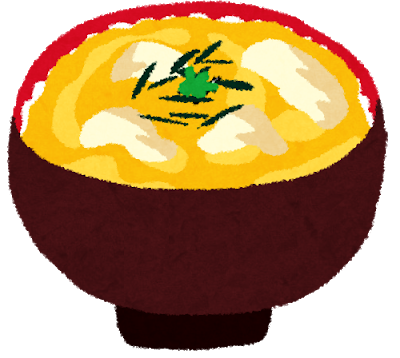
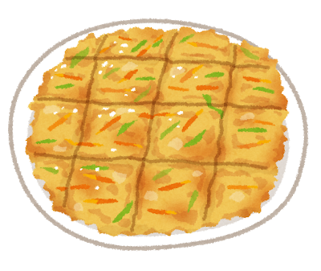
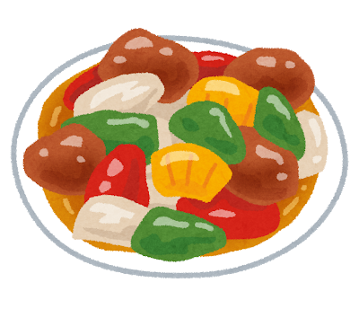
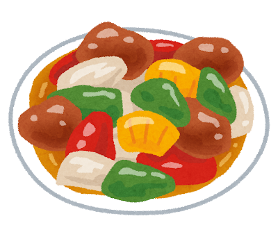
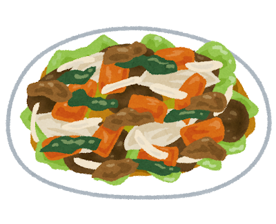
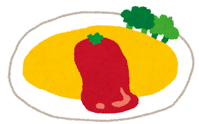
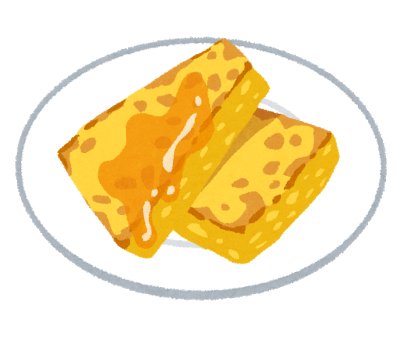
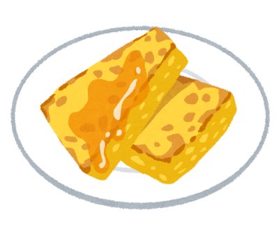

ジャンルから選ぶ
-
栗ごはん
材料
むき栗
調味料：酒、みりん、鎌田のだし醤油、砂糖、黒ごま
白米、もち米作り方
・お菓子の甘栗、むき栗を、2種類くらいの大きさに切る。
・白米ともち米を5:1〜1:1の好きな割合でといで、炊飯器に合わせて水を入れる。
・栗と、酒、みりん、鎌田のだし醤油を少し入れて、炊く。
・炊けたら、味を見ながら砂糖を入れる。好みの甘さになったら、おわんに盛って、黒ごまをかけて、完成。 -
親子丼
材料
親：鶏胸肉 1枚か、ささみ 3〜4本、塩こしょう、酒
子：卵 2個
玉ねぎ 1個
調味料：しょうゆ・みりん2、酒・砂糖1、だし 少し
作り方
・玉ねぎを切る。つなよしパパはシャキ玉が大嫌いなので、念のためにチン。
・お肉の脂身や皮、筋をのぞいて、食べる大きさに切ったら、塩こしょう、酒。
・深めのフライパンにお湯を少し沸かして 沸いたら調味料と玉ねぎを入れる。
沸いたら調味料と玉ねぎを入れる。
・しばらくしたら、火を少し弱めて お肉も入れる。この間に、ボウルで溶き卵を用意。
お肉も入れる。この間に、ボウルで溶き卵を用意。
・全体に火が通ったら、火を強くして、卵を一周かける。
お箸を、ボウルの縁に対して垂直に接するように固定しながらやると、卵の量が調節できて良い。
・主に白身を軽く混ぜて、白身が固まってきたら火を止めて 完成。
完成。
-
チヂミ
材料
具：ニラ 1/2束、玉ねぎ 半分、チーズ
生地：薄力粉 70cc、片栗粉 30cc、水 100cc、卵 1個、鶏ガラスープの素、塩
油：サラダ油、ごま油 半々
タレ：お酢、しょうゆ、ラー油作り方
・生地の材料をボウルに入れて、ダマがなくなるまで混ぜる。
・ニラは3〜4cm、玉ねぎは薄く切って、具を全部生地に混ぜる。
具が多すぎたら粉と水を足して調節する。卵を足すと味が変わるので卵は足さない。
・熱くしたフライパンに油を入れて、焦がさないように両面焼いたら、火を止めて完成。
・ヘラで格子状に切って、好きなタレをつけて食べる。 -
 酢豚
酢豚材料
豚肉：ヒレブロック、切り落としなど、塩こしょう、しょうゆ、酒、片栗粉
野菜：ピーマン、玉ねぎ、なす、パインの缶詰
タレ：しょうゆ1、酒1、砂糖2、ケチャップ2、鶏ガラスープの素
お酢：穀物酢、黒酢 半々 サラダ油作り方
・豚肉を細めに切って、塩こしょう、しょうゆ、酒。時間があれば少し置く。水気をふいてから片栗粉をまぶす。
・野菜を全部切る。
・熱くしたフライパンに火をつけて油を入れる。
熱くなったら、まず野菜を全部入れて炒める。（パインはまだ）
・野菜に火が通ったら、フライパンの端に寄せて、空いたところに油を足してお肉を焼く。
・焼けたら、火を弱めてパインとタレを全部入れて、焦げないようにタレを全体に絡める。
お酢は長時間火にかけると味が変わるので、まだ入れない。
・そろそろ良さそうなところで、味を見ながらお酢を入れる
最後に火を戻して軽く炒めたら、火を止めて完成。
・火を止めた後、好みでラー油を絡めてもおいしい。 -
野菜炒め
材料
好きな野菜：白菜かキャベツ、もやし、なすなど
みそ：白菜なら豆豉醤、キャベツならつけてみそかけてみそ
調味料：しょうゆ、みりん、豆板醤、塩、鶏ガラスープの素、砂糖
白菜なら、エビ油、ホタテだし、お酢
サラダ油作り方
・好きな野菜を食べる大きさに切る。
・フライパンに火をつけて油を入れる。
熱くなったら、野菜を全部入れて、鶏ガラスープの素をかけて炒める。
・みそをメインに、素早く好きな分量で調味料を入れて、炒める。お酢を入れるときは、お酢は最後。
・味を見て、よければ火を止めて完成。
-
オムライス
材料
オム：卵、豆乳、塩、砂糖
ライス：白米、小さめのきのこ、ハム、コンソメ、鶏ガラスープの素
調味料：塩、味の素、鶏ガラスープの素、酒
油：サラダ油、バター ケチャップ作り方
・ライスの具を細かく切ったら、油をあたためたフライパンにライスの材料を全部入れて炒める。
できたら、火を止めて一旦お皿に出す。
・ボウルに卵液を作り、ほどよく混ぜる。
・キッチンペーパーでフライパンの汚れを軽くふいて、再び油を温めたフライパンでオムを焼く。
・さっきお皿に出したご飯を丸いオムの真ん中において、端を整えたら、
火を止めて今のお皿を逆さまに当ててひっくり返す。
・ケチャップなどをかけて、完成。 フレンチトースト
フレンチトースト材料
食パン 2枚
卵液：豆乳、卵 1個、砂糖
油：サラダ油、バター 少し
仕上げ：塩、シナモンシュガー、砂糖、いちごジャム、バニラ系のアイス
作り方
・食パンを1/4(正方形)または1/8(三角形)に切る。
・ボウルに卵と砂糖を入れて混ぜる。
つなよしママは乳糖不耐症で牛乳がダメなので、卵液がゆるくなりすぎない程度に豆乳を加えて混ぜる。
・フライパンに油を入れて火をつける。ボウルに次々パンを浸していき、浸した順に両面焼いていく。
焼けた順にほんの少しずつ塩をふっておく。
・全部焼けたら、火を止めてお皿に出して好きなトッピングをして、完成。